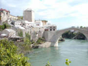

KOMARNA Sightseeing

| |
| |
 Sightseeing
information for areas in Hercegovina
Sightseeing
information for areas in Hercegovina


Information about Mostar, Buna River and Blagaj, Medjugorje, Gabela, Pocitelj and Mogorjelo are on the Mostar and Around page.Sightseeing suggestions on this page:
- Kravica Waterfalls - must see
- Medjugorje Pilgrim Site and Etno Selo
- Hutovo Blato
- Radimlja Necropolis
- Humac Museum and Gracine Roman Camp
Kravica and Kocusa Waterfalls
 Kravica:
The cold, clear water falls into a small valley. From noon onward
(when the sun gets hot) some of the water particles hurdled into the
air vaporize and puts a lid of mist on top of the valley making it a
pleasant shade-like feeling to be there.
Kravica:
The cold, clear water falls into a small valley. From noon onward
(when the sun gets hot) some of the water particles hurdled into the
air vaporize and puts a lid of mist on top of the valley making it a
pleasant shade-like feeling to be there.
Getting tired of relaxing on the sandy beach you can head out into the pool of water, which also has a sandy bottom. If you are up to it, you can swim across the pool (notice how the water gets colder), climb the rocks and jump. This is what the local teenagers do to impress one another - and perhaps the girls.
There is also restaurants where you can enjoy the view and relax by
listening to the rumbling from the waterfalls. The entrance fee was 6
KM (3 Euro) in 2017 and is used to maintain the road, stairs and
toilets.
Kocusa: Close to Kravica (18 km) and on the same
river is a small and charming waterfall with no entrance fee, picnic
facilities and restaurants. The name of the river here is Mlade, but
changes its name to Trebizat before it enters the Kravica falls.
Pec Mlini Valey: A few kilometers above Kocusa the
Mlade River is called Tihaljina and it emerges from an underground
river 18 km north west of Kocusa. The place where the spring emerges
is channeled into a hydroelectric power plant. The valey is very
beautiful so even if you can't see the spring it is worth a visit and
you can visit an interesting big cave close to the spring. The cave is
called Ravlica Petcina and it has been in use since since ancient
times and up to Second World War where the Partisans used the cave as
a refuge. The cave has been fenced of (2019), but should be open from
09:00 to 19:00. It doesn't have a lot of visitore so call +387
63 986 419 if you want to be sure it is open.
Driving directions to Kravica waterfalls - Remember your passport and insurance papers for the car:
This is the short route - (All distances are very approximate as read of the meter of a car - in flight)
- Go to Metkovic. Turn left over the Neretva bridge
- 1 km to the roundabout, turn right towards Vid (Narona)
- 3 km to Vid, turn right towards Prud (1 km) and pass border after Prud
- Continue 10 km and turn right in Hardomije (the road may have
changed here because of motorway construction)
- After 1 km - look carefully for small road that turns very, very
sharply to the right and up
- 3 km turn right on a bigger road
- After 2,5 km you arrive at a parking. Drop your car and don't trust it if someone tries to claim a parking fee.
- Walk down the road or take the stairs. There is an entrance fee to visit the falls.
Driving directions from Kravica parking to Kocusa waterfalls
- Go back from the parking 3.3 km and turn left towards Ljubuski
- Drive 3.5 km to a roundabout and take the first exit
- drive 8.9 km and turn left into road 422
- Drive 1.2 km and turn right into a small road. If in doubt then keep right
- Go 1 km past Konoba Kocusa to good parking facilities by the waterfall
Driving from Kocusa waterfalls to Pec Mlini and Ravlica cave
- Go back to road 422 and turn left 1.2 km
- Then turn left into M6 and drive 6.9 km
- Turn left into Road 421 and drive 6.6 km to Jaksenica
- Turn left into unnamed road and drive 5.3 km to view over
Pec Mlini (serpentiner sving)
- Ravlica Cave is a bit up from the road and hidden behind vegetation.
Medjugorje and Etno Selo
Komarna is the ideal place to stay if you want to pray in Medjugorje and also have the benefit of a beautiful scenery and The Adriatic Sea.
 On June
24th 1981 a young woman bearing a child on her arm appeared on a hill
outside Medjugorje. With her free hand, she urged six young people to
come closer, but they did not dare to do so as they sensed something
extraordinary. However, urged by a will they could not describe all of
them came back the next day individually, and she revealed herself to
be The Holy Virgin. Since 1981 more than 20 million pilgrims have
visited Medjugorje. It makes it one of the biggest Catholic pilgrim
places along side Lourdes in France.
On June
24th 1981 a young woman bearing a child on her arm appeared on a hill
outside Medjugorje. With her free hand, she urged six young people to
come closer, but they did not dare to do so as they sensed something
extraordinary. However, urged by a will they could not describe all of
them came back the next day individually, and she revealed herself to
be The Holy Virgin. Since 1981 more than 20 million pilgrims have
visited Medjugorje. It makes it one of the biggest Catholic pilgrim
places along side Lourdes in France.
When you are in the Medjugorje area you should visit Etno Selo for a drink or a meal. It is a very nice area where a typical Bosnian village has been recreated for tourists. It has a good restaurant, souvenir shops in the stone houses, a farm area and a church.
Driving directions to Medjugorje:
- From Metkovic, continue towards Mostar
- Turn left towards Capljina where you cross the river
- Continue towards Ljubuski
- Follow the signs from here
Remember your passport and insurance papers for the car.
Driving from Medugorje to Etno Selo
From the big church in the center go north about 400 meter
Turn left on Franje Tudmana and drive 1.8 km
Take 3. exit in roundabout and follow road 425a 1.3 km
Look for a small sign and turn left into what looks like an industrial
area
Etno Selo is 400 meter down the road on your left
 Museum and
Roman Camp Gracine in Humac
Museum and
Roman Camp Gracine in Humac
Humac is about 5 km south-west of Ljubuski, and now almost part of the suburbs of Ljubuski. In the Fransican monestary in Humac there is an interesting and modern museum. Well worth a visit.
The area of Gracine in Humac is on a plateau between the left bank of the river Trebizat to the south and Humac to the north. The Roman military camp was built on level and well-drained land. About 450 m to the south of the camp is a bridge over the Trebizat River. There was probably a bridge here in ancient times too. The site is bounded on three sides by local roads and to the north-west by the Vrgorac-Ljubuski road. The role of the military camp was to protect the main Roman site of Narona during the war with the Dalmatians at the time of Augustus' campaigns in 35 to 33 BC.
Hutovo Blato
Remember your passport and insurance papers for the car.
 Hutovo
Blato is a hunting resort for water birds and the largest winter
resort for the birds in Southern Europe. 200 species of birds find
sanctuary here during the winter. It is a nice and interesting trip
through Herzegovina and easy to find if you start in Neum.
Hutovo
Blato is a hunting resort for water birds and the largest winter
resort for the birds in Southern Europe. 200 species of birds find
sanctuary here during the winter. It is a nice and interesting trip
through Herzegovina and easy to find if you start in Neum.
Turn left in the T-junction in Neum and follow road number 17.3
towards Hutovo and Capljina. There is a new and very fast road from
Neum and half-way to Capljina. If you follow the old road you pass
directly through a ruin that is a close relative of Kula Norinska.
The, fortress was used by the Ottoman Empire to control the strategic
mountain pass and the trade routes from the cost to mainland Bosnia.
During the 1991 war, the Croatian army also held this pass and
prevented the Serbian Army from reaching the coast. Do not walk away
from the roads in this area. Nobody seems to be absolutely sure that
the place has been cleared of land mines.After the ruins, you drive
down to Hutovo. About 6 km after Hutovo the road divides towards
Stolac and Capljina.
This is where you arrive if you followed the new road. Follow the road towards Capljina.
The road to Stolac is a bit of a challenge, but it does run through
some very interesting landscape.
The road towards Capljina will take you to a point where there is a very nice view of Hutovo Blato. When you stand where the picture was taken there are some concrete constructions behind you. They are part of a hydro electric plant. Below you in the rock there are some huge turbines in 90 meters tall shafts.

Necropolis Radimlja
The burial ground is on the road between Capljina and Stolac (turn right towards Stolac 9 km from Metkovic). The road follows the Bregava River where Cro-Magnon man lived 13000 years ago. Stone tools and bones have been found in Badanj Cave (Spilja Badanj) together with some engravings outlining a horse and other signs like arrows. Unfortunately, the cave is not accessible.
About 20 km down the road in the area of Vidovo Polje and on the
right side of the road 3 km before Stolac there is a large burial
ground with "stecaks" (old tombstones) from the early Middle Ages.

It is probably the best preserved monuments in this part of the
world. The area is not in a good shape, but has been declared a
national monument and there is hope that the government will stop the
pollution and destruction. If not - go and see it before it
disappears. The stones and the engravings are very interesting.
In 2011 the stones were cleaned and now look like they probably did
when they were raised in memory of deceased 1000 years ago. It isn't
necessarily an improvement. The reliefs are more difficult to see now,
and we preferred them the way they were before.
Standing on the Necropolis and looking north towards the hills you are
almost able to see the remains of the old Hellenistic town of Daorson.
Daorson
 Daorson was the home of the
Illyrian tribe of the same name. It goes back to the Iron Age and was
inhabited from the start of the early Bronze Age (17. to 16. Century
BC). There were massive town walls with very large stone blocks and
two great arched entrances that are now ruined. At the back, against
the cliff there is a so-called Acropolis. The Romans conquered and
destroyed this culture in the second century BC, but used the town as
an outpost for Narona until the Avar tribes conquered it and destroyed
it in the 800s.
Daorson was the home of the
Illyrian tribe of the same name. It goes back to the Iron Age and was
inhabited from the start of the early Bronze Age (17. to 16. Century
BC). There were massive town walls with very large stone blocks and
two great arched entrances that are now ruined. At the back, against
the cliff there is a so-called Acropolis. The Romans conquered and
destroyed this culture in the second century BC, but used the town as
an outpost for Narona until the Avar tribes conquered it and destroyed
it in the 800s.
There is very little left to see, but the remains of the walls are impressive and shows that the Daorsi people had great building skills. Some of the stone blocks are bigger than those used for the Egyptian pyramids, and they are fitted perfectly together.
The Daorsi was allied with the Romans during the Illyrian wars and managed to keep their independence when other Illyrian tribes were conquered. They had many of the diplomatic and trading skills that are later found in Dubrovnik, who also managed to keep independence against all odds.
It is possible to get to the ruins if you don't mind serpentine (hairpin), narrow roads and dirt roads.
- * Start from Radimlja necropolis and drive 3 km to Stolac
- * Just after you have passed the bus station on your right turn left on a narrow road
- * Drive 1.4 km. First through interesting serpentines then level and keep to the asphalt road
- * After 1.4 km keep right on the asphalt road and go 740m
- * Take a sharp left turn on a road that soon is mixed gravel and beton
- * Go 1.6 km - keep right when in doubt
Just before the ruins you pass a picnic place with a fantastic view
and like in Radimlja - a lot of garbage that nobody seems to care
about. You cannot drive all the way to the ruins and will have to walk
the last 200 meters.
A large area around the present ruins was residential and commercial
areas, and the site has never been properly excavated.